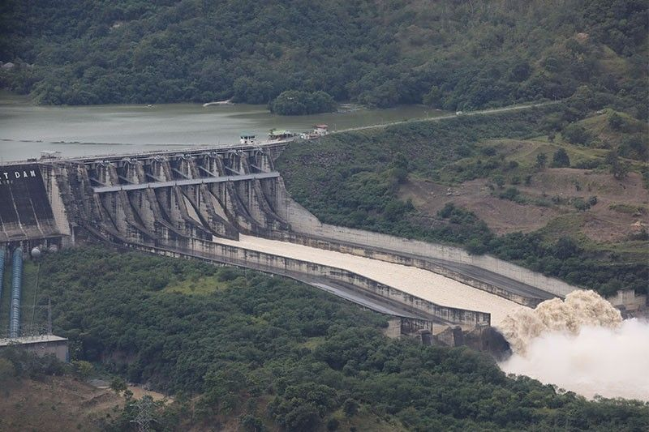

Magat Dam is one of the largest multipurpose dams in the Philippines · a massive engineering achievement spanning the Magat River in Isabela, creating a vast reservoir surrounded by rolling hills and providing power and irrigation to the entire Cagayan Valley region.

Completed in 1983, the Magat Dam is a massive multipurpose dam spanning the Magat River on the border of Ramon and Alfonso Lista in Isabela province. With a height of 114 meters and a crest length of 1,140 meters, it is one of the largest dams in the Philippines and the largest in Luzon.
The dam serves multiple critical functions for the Cagayan Valley region — it generates hydroelectric power for the national grid, provides irrigation water for hundreds of thousands of hectares of agricultural land in Isabela and Cagayan, and acts as a flood control structure protecting downstream communities from the seasonal flooding of the Cagayan River system.
The Magat Reservoir created by the dam is a vast body of water stretching across the Cagayan Valley, surrounded by rolling green hills and mountains. The reservoir has become a popular destination for fishing, boating, and scenic viewing. The dam itself is an impressive sight — the scale of the structure against the surrounding landscape gives a powerful sense of human engineering in harmony with nature.
Magat Dam is located on the border of Ramon and Alfonso Lista, Isabela — about 30 km west of Ilagan City and easily accessible from the main Isabela highway.
Fly from NAIA Manila to Cauayan Airport (Isabela) — about 1 hour. Alternatively, take an overnight bus from Cubao to Ilagan City or Cauayan. Both cities are within 30₱45 minutes of the dam.
Flight to Cauayan: ~1 hour | Bus: ~9₱10 hours | ₱700–₱3,500From Ilagan City or Cauayan City, hire a tricycle or van to Magat Dam. The ride takes about 30₱45 minutes. You can also rent a motorcycle or join a local tour that includes the dam as part of an Isabela day trip.
Tricycle/van: ~30₱45 min | ~₱150–₱300The main viewpoint and visitor area is at the dam crest — you can walk along the top of the dam for views of both the reservoir and the downstream valley. Register at the NIA (National Irrigation Administration) office at the entrance.
Free entry | Open during daylight hours | Bring valid IDMagat Dam is best visited as part of an Isabela day tour. Combine with Tumauini Church in the morning and the Ilagan Japanese Tunnel in the afternoon for a full day of Isabela history and scenery.
Combine with Tumauini Church & Ilagan Tunnel | Full day recommendedClick any pin to explore Magat Dam and nearby attractions in Isabela province.
A complete guide to the dam and a suggested Isabela day tour combining the best of the province.
Register at the NIA office at the entrance with your valid ID. The staff are generally welcoming to tourists. Pick up any available information about the dam's history and operations before proceeding to the dam crest.
Walk along the 1,140-meter dam crest. On one side, the vast Magat Reservoir stretches to the horizon — a sea of blue surrounded by green hills. On the other side, the Magat River valley drops away below. The scale is humbling.
Find the best viewpoints along the reservoir shore for panoramic photography. The combination of the vast water body, the surrounding hills, and the dam structure creates dramatic compositions at any time of day.
If the spillways are open during your visit, the sight of water cascading over the dam face is one of the most powerful natural-engineering spectacles in the Philippines. The sound and scale are extraordinary.
Start your day at Tumauini Church — the unique terracotta-tiled Baroque church in Tumauini municipality. Allow 45₱60 minutes for a thorough visit.
Drive to Ilagan City and visit the World War II Japanese Tunnel — a sobering and historically significant underground complex used during the Japanese occupation.
End your day at Magat Dam. Walk the crest, take in the reservoir views, and watch the sunset over the water. A powerful and memorable close to an Isabela heritage day.
"We visited when the spillways were open after a week of heavy rain and it was one of the most spectacular things I've ever seen. The water cascading over the dam face, the roar of the water, the mist rising from the valley below — it was like standing next to a natural waterfall, except this one was built by human hands. Magat Dam is genuinely impressive and completely underrated as a tourist destination."
"The reservoir at sunrise was absolutely beautiful — the mist on the water, the green hills reflected in the surface, the silence broken only by fishing boats. We combined it with Tumauini Church and the Japanese Tunnel for a full Isabela day and it was one of the best day trips we've done in the Philippines. Isabela is seriously underrated."